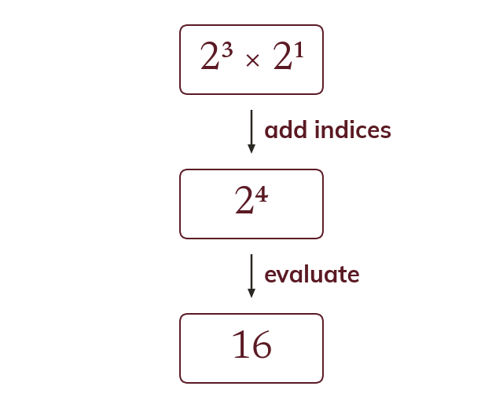

The laws are just counting factors
An index counts how many times a base is used as a factor. Multiplying powers of one base adds the indices, and dividing subtracts them.
An index records how many times a base is used as a factor, so a product of two powers of the same base is simply a longer list of the same factor. Counting that longer list is what adding the indices does, which is why rather than Dividing cancels factors from the list, so the indices subtract. Neither law says anything about the base, and neither works across different bases: is product of two different lists and cannot be collected into one power at all. Reading a law back to the list it came from is the reliable way to check it.